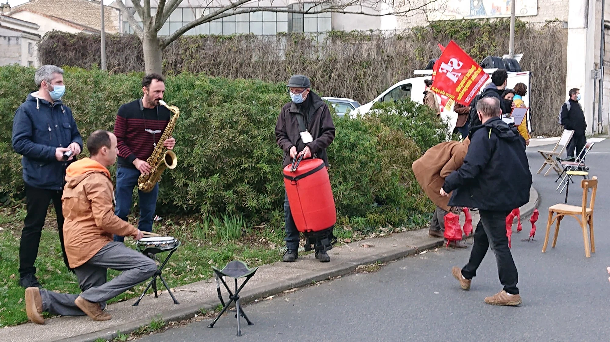

Compte rendu
À Niort, la culture dans la mobilisation du 4 février 2021
Date indiquée par Facebook · 4 février 2021
Repères éditoriaux
Les revendications des travailleurs de la culture ont trouvé leur place dans la mobilisation niortaise du 4 février. Le compte rendu interprofessionnel complète ce témoignage.
Texte conservé avec la publication
La culture était aussi dans la lutte ce 4 février à Niort
À l’appel d’une multitude d’organisations, le 15 décembre 2020, près de 20 000 professionnel.le.s du spectacle et de la Culture s'étaient mobilisés à travers la France pour dénoncer la politique irresponsable menée par le Gouvernement à l’encontre du secteur culturel.
À ce jour, les comédien.ne.s, les musicien.ne.s, les chanteuses et chanteurs, les danseuses et danseurs, les circassien.ne.s, les marionnettistes, les artistes auteurs, les technicien.ne.s du spectacle ou les enseignant.e.s artistiques, se trouvent toujours dans l’impossibilité de travailler en raison des interdictions imposées au spectacle vivant et aux salles de cinéma.
Ici, ce qui se joue, ce sont des femmes et des hommes qui veulent travailler, même si les lieux sont fermés au public et qui tombent par milliers dans la précarité.
Ici, ce qui se joue, c’est l’effondrement de nos systèmes de solidarité professionnelle que nous avons construits et qui ont démontré leur efficacité en garantissant des droits sociaux aux travailleuses et travailleurs de nos secteurs, en particulier aux plus précaires. Nous avons alerté à maintes reprises la ministre de la Culture et le gouvernement de l’urgence sociale qui s’abat sur nos professions et avons porté à leur connaissance nos propositions.
A ce jour, malgré la com' de la ministre, aucune réponse aux propositions de soutien aux répétitions/résidences n'a été apportée.
Voilà pourquoi aujourd'hui à Niort, comme dans beaucoup d'autres villes en France, les professionnels du spectacle étaient présents aux côtés des syndicats de l'interpro pour dire "NOUS VOULONS TRAVAILLER ET VIVRE DIGNEMENT DE NOS MÉTIERS".
NB - A défaut de pouvoir évoluer sur la scène nationale, les professionnels du spectacle ont fait un bref happening devant la gendarmerie nationale.

Sources
Archive rouge · export Facebook · AR-0002-FB-02072
À lire aussi · 4 février 2021 à Niort. Défendre l’emploi, les salaires et les services publics